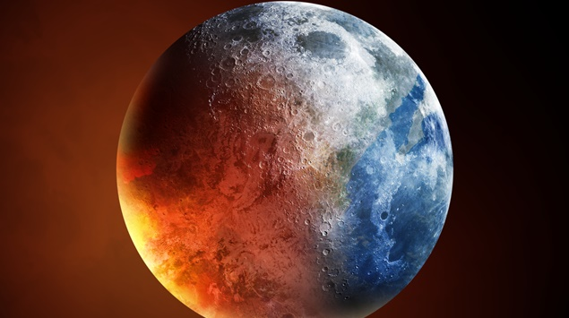

Aquecimento Global
O aquecimento global é o processo de mudança da temperatura média da terra, da atmosfera e dos oceanos. O acúmulo de altas concentrações de gases que causam o efeito estufa na atmosfera bloqueia o calor emitido pelo sol e o impede de sair da superfície terrestre, aumentando a temperatura média da Terra.
Causas do aquecimento global
A principal causa do aquecimento global é a emissão de gases de efeito estufa.
Estimativas sugerem que as emissões de gases do efeito estufa, em decorrência de atividades humanas,
aumentaram em 70%, no período de 1970 a 2004.
Existem várias atividades que emitem esses gases, as principais atividades são:
- Uso de combustíveis fósseis: A queima de combustíveis fósseis usados em automóveis movidos a gasolina e óleo diesel libera dióxido de carbono.
- Desmatamento: O desmatamento além de destruir grandes áreas de floresta, também libera muitos gases de efeito estufa.
- Queimadas: A queima da vegetação libera quantidades significativas de dióxido de carbono.
- Atividades Industriais: As indústrias também são os responsáveis pela emissão de gases poluentes. Essa situação compreende a maior parte da emissão de gases de efeito estufa em países bastante desenvolvidos.
Efeito Estufa e Aquecimento Global
O efeito estufa é um fenômeno natural e possibilita a vida humana na Terra.
Quando a energia solar chega ao planeta terra uma parte dela é refletida diretamente de volta ao espaço, ao
atingir o topo da
atmosfera terrestre - e parte é absorvida pela superfície da Terra, o que consequentemente causa o seu
aquecimento. Uma parcela desse calor é irradiada de volta ao espaço, mas é bloqueada pela presença de gases
de efeito estufa que, apesar de deixarem passar a energia vinda do Sol, são opacos à radiação terrestre,
emitida em maiores comprimentos de onda.
O que fazer para evitar os gases do efeito estufa?:
- Produzir menos lixo e evitar produtos com muita embalagem e itens plásticos, uma vez que a decomposição dos mesmos produzem dióxido de carbono e metano. Além de dar preferências aos estabelecimentos e marcas que façam uso de embalagem sustentável em seus produtos.
- Usar transporte público e meios alternativos, como bike e patinetes convencionais e elétricos (incluindo moto elétrica) em vez de veículos individuais para diminuir a emissão de gases;
- Consumir produtos locais, pois estes não precisam ser transportados em longas distâncias, evitando as emissões de gases do efeito estufa;
- Diminuir o uso do ar condicionado, pois liberam gases do tipo HFC (hidrofluorcarbonetos), mais potentes do que o CO2
Conclusões finais
A mídia desempenha um papel fundamental na sociedade contemporânea, exercendo influência sobre nossa percepção do mundo, fornecendo informações, educando e até mesmo moldando nossas opiniões e comportamentos. Tanto como comunicadores quanto como consumidores de mídia, todos desempenhamos papéis importantes nesse ecossistema mediático. Nesta apresentação, explorarei minhas experiências e os desafios que enfrentei ao assumir diferentes funções na mídia, destacando a importância da análise crítica nesse contexto.
Na sociedade contemporânea, estamos constantemente expostos a uma ampla gama de conteúdos midiáticos. A mídia exerce uma influência significativa na maneira como formamos nossas opiniões e perspectivas. No entanto, essa exposição também pode ser um desafio, pois nem todo conteúdo é confiável ou imparcial. É essencial desenvolvermos a habilidade de análise crítica para distinguir informações precisas de desinformação. Ao aprimorar essa habilidade, somos capazes de avaliar a credibilidade das fontes, verificar a veracidade das informações e considerar diferentes pontos de vista. A análise crítica nos capacita a tomar decisões informadas e a formar opiniões fundamentadas, permitindo-nos navegar de maneira mais consciente e responsável no panorama midiático atual.
A tecnologia moderna nos capacita a desempenhar o papel de produtores de mídia, permitindo-nos compartilhar notícias nas redes sociais, criar blogs, vlogs e até mesmo trabalhar em equipes de produção em veículos de comunicação tradicionais. No entanto, assumir o papel de produtor de mídia traz consigo a responsabilidade de apresentar informações precisas, imparciais e éticas. Enfrentamos desafios, como a pressão por conteúdo sensacionalista em busca de audiência. É essencial encontrar um equilíbrio entre a busca por engajamento e a responsabilidade de fornecer informações confiáveis e de qualidade. Ao utilizar a tecnologia de forma consciente e ética, podemos contribuir para um ecossistema midiático mais informado e responsável.
No âmbito do jornalismo, assumir o papel de repórter, editor ou apresentador apresenta desafios singulares. É de extrema importância preservar a integridade jornalística, assegurando que as notícias sejam precisas, equilibradas e imparciais. A pressão por audiência e a competição podem dificultar a manutenção desse padrão, mas a análise crítica desempenha um papel essencial para resistir a essas pressões. Ao avaliar cuidadosamente as fontes, verificar os fatos e abordar diferentes perspectivas, os profissionais do jornalismo podem garantir a entrega de informações confiáveis e de qualidade. A análise crítica é uma ferramenta crucial para preservar a integridade jornalística em um ambiente cada vez mais desafiador.
A publicidade e o marketing desempenham um papel relevante na mídia, exercendo influência sobre nossas decisões de compra. Nesse contexto, enfrentamos desafios que envolvem a criação de mensagens persuasivas sem recorrer a táticas enganosas. A análise crítica desempenha um papel fundamental ao nos ajudar a distinguir entre uma propaganda legítima e uma tentativa de manipulação. Ao examinar cuidadosamente as informações e verificar a veracidade das alegações promocionais, somos capazes de tomar decisões informadas e evitar sermos influenciados por estratégias de marketing questionáveis. A análise crítica nos capacita a ser consumidores conscientes e a selecionar produtos e serviços com base em critérios objetivos e confiáveis.
A análise crítica desempenha um papel essencial em todos os aspectos da mídia. É uma habilidade que envolve questionar, avaliar e contextualizar as informações que nos são apresentadas. Devemos considerar a fonte das informações, verificar a veracidade dos fatos, compreender os interesses por trás de uma história e entender o contexto em que ela é apresentada. Essa capacidade nos permite tomar decisões informadas e evitar sermos manipulados pela mídia. Ao aplicar uma análise crítica em nossas interações com a mídia, estamos mais aptos a discernir entre informações confiáveis e aquelas que possam ser enviesadas ou enganosas. A análise crítica é uma ferramenta poderosa para fortalecer nossa autonomia e tomar decisões embasadas em fatos e evidências.
Assumir diferentes papéis na mídia implica desafios e responsabilidades, mas também oferece oportunidades para impactar positivamente a sociedade. A análise crítica é fundamental para enfrentar esses desafios, assegurando que a mídia desempenhe seu papel de informar, educar e influenciar de maneira responsável e ética. Tanto como consumidores quanto como produtores de mídia, todos desempenhamos um papel importante na construção de um ambiente midiático mais consciente e influente. Ao exercer a análise crítica, podemos contribuir para a promoção de uma mídia que seja confiável, imparcial e que promova o bem-estar coletivo. É através dessa consciência que podemos moldar positivamente a sociedade e garantir que a mídia exerça seu poder de forma construtiva.
É de extrema importância que a mídia dê destaque a essa questão. A mídia possui o poder de informar e educar a população sobre o aquecimento global, sendo capaz de criar um senso de urgência para a necessidade de ação. Ao trazer visibilidade para esse problema, a mídia desempenha um papel fundamental em conscientizar as pessoas sobre as consequências do aquecimento global e na promoção de soluções efetivas. Com sua capacidade de alcançar um público amplo, a mídia pode mobilizar e engajar indivíduos, governos e organizações na busca por medidas que combatam as mudanças climáticas. É através dessa conscientização e ação coletiva que poderemos enfrentar o desafio do aquecimento global e trabalhar em prol de um futuro sustentável.
A mídia desempenha um papel crucial na conscientização pública sobre o aquecimento global, ao fornecer informações sobre suas causas, impactos e soluções. Além disso, ela pode ajudar a superar as barreiras de compreensão e tornar o assunto mais acessível ao público em geral. A mídia também pode influenciar a pressão sobre os líderes políticos para que adotem medidas efetivas contra o aquecimento global. Ao divulgar informações sobre o problema e seus impactos, a mídia contribui para criar um apoio público às políticas de redução das emissões de gases de efeito estufa. Educar a população é um dos principais benefícios de abordar o aquecimento global na mídia, pois ajuda as pessoas a compreenderem melhor as causas e consequências desse fenômeno. Essa conscientização permite que as pessoas tomem decisões informadas em suas vidas e pressionem seus líderes políticos a agirem de forma adequada.
- Criar um senso de urgência: A mídia pode ajudar a criar um senso de urgência sobre o aquecimento global. Isso pode ajudar a motivar as pessoas a agirem para reduzir as emissões de gases de efeito estufa.
- Influenciar a opinião pública: A mídia pode influenciar a opinião pública sobre o aquecimento global. Isso pode ajudar a criar um apoio público para políticas que reduzam as emissões de gases de efeito estufa.
- Pressionar os líderes políticos: A mídia pode pressionar os líderes políticos a tomarem medidas para combater o aquecimento global. Isso pode ajudar a garantir que sejam tomadas medidas para reduzir as emissões de gases de efeito estufa.
É importante que a mídia fale sobre o aquecimento global de forma precisa e equilibrada. A mídia deve fornecer informações sobre as causas, os impactos e as soluções para o problema, e deve evitar o sensacionalismo ou a desinformação.
Referências
-
ecycle.com.br
antigo.mma.gov.br